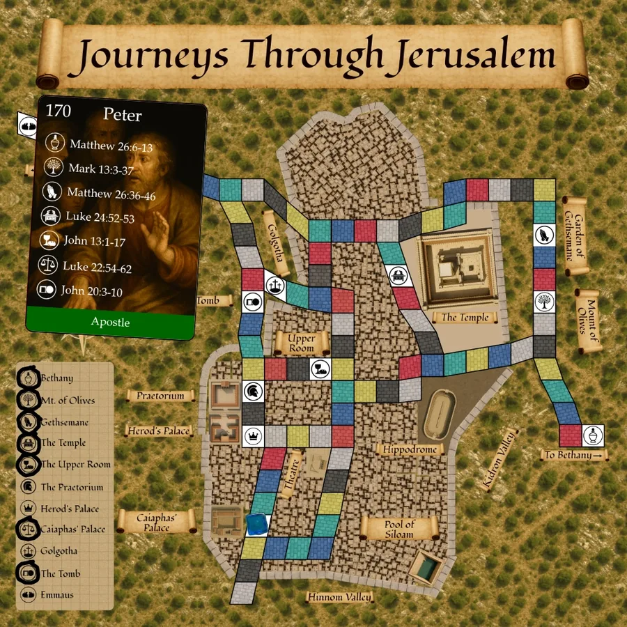

A Biblical journey-building game
Journeys through Jerusalem
Follow Biblical characters through Jesus’ final days in Jerusalem. Visit key sites and complete their journeys to earn points.
- 2–6 players
- Ages 12+
- 15–30 min
- 18 character cards
- Plays on your own map
$49.99
Ships from the SDG Biblical Wisdom shop.

Walk where they walked
Follow in the footsteps of Biblical Characters during Jesus' final days in Jerusalem. Move through the ancient city, visit key sites, and complete character journeys to earn points.
Objective: Score the most points by completing character journeys. The game ends when any player completes at least one journey from each of three categories: Apostle, Friend of Jesus, and Enemy of Christ.
Two to six players. The game takes 15-30 minutes to play.
Note: This game contains small parts that could be a choking hazard for small children.
What’s in the box
Everything each player needs to travel the city on their own map. Tap a picture to enlarge it.
Map mats
One for each player: ancient Jerusalem, with a colourful path joining 11 key sites.
18 Character cards
Each lists the sites a character visited, the Scripture that puts them there, and the points.
Player tokens
Small coloured cubes, one for each player, to move around your map.
Every component, in detail
Individual Map Mats (1 per player): Each mat shows ancient Jerusalem with a colorful path connecting 11 key Biblical sites*. The bottom left corner has an integrated tracking area where players mark visited sites.
Player Tokens (1 per player, each a different color): Small cubes used to move around the map.
Dry Erase Markers (1 per player): Used to track which sites have been visited.
Six-sided Die (1): Used to indicate how many spaces players may move.
Character Cards (18 total): Each card shows:
- Character Name
- Point Value: How much completing the journey scores.
- Biblical Sites: Places the character visited.
- Scripture References: Placing the character at each site.
- Category: Apostle, Friend of Jesus, or Enemy of Christ.
* Note that we don't know the exact location of most of the key sites in the game. We have used locations at or near those identified as likely spots by credible historians.
Browse all 18 character cards
A closer look at the cards
How to play
Everyone rolls and moves at once, on their own map. Visit every site on your Character Card to complete a journey, then start the next. Finish an Apostle, a Friend of Jesus and an Enemy of Christ to end the game.
Setup
To prepare to play the game:
- Each Player Receives:
- One Map Map
- One Dry Erase Marker
- One Colored Player Token
- Shuffle the 18 character cards and place them face-down in a draw pile within reach of all players.
- Each player draws 2 character cards, secretly looks at them, chooses 1 to keep, and returns the other face-down to the bottom of the deck. Keep your chosen card secret from other players.
- Each player places their token on any square on their map mat that matches their token color. This is your starting position.
Hint: Start as close as possible to one end of your character's journey.
Each round
Players take turns rolling the die. The youngest player goes first, with play passing to the player's left.
When a player rolls, all players act:
- Everyone moves: All players simultaneously move their tokens up to the number shown on the die along the colored paths on their individual map mats. You may move fewer space if you wish in order to finish on a key site, but you cannot move more spaces than the die shows.
- Mark visited spaces: If you finish your move on one of the 11 key Biblical sites (shown with an icon and a site name label), circle that site in the tracking area of your mat.
- Complete a journey: If any player has collected all the required site visits shown on their character card, they may immediately announce completion, even if it's not their turn to roll.
Completing a journey
When you complete a character journey:
- Reveal: Announce which character you're completing. Place your character card face-up in front of you.
- Clear: Erase all the markings from the tracking area of your mat so that you start fresh with your next character.
- Choose: Draw two new character cards (if available). Choose one to play and return the other to the bottom of the deck.
Ending the game
The game ends immediately when any player completes at least one journey from each of the three categories: One Apostle, One Friend of Jesus, and One Enemy of Christ.
Players tally their scores, adding the points on the journeys they completed, plus 5 points for each location they visited in their current incomplete journey (if any).
The winner is the player with the most points. If there is a tie, the player with the most completed journeys wins.
Strategy tips
Choose your starting position wisely: Start on a colored square as close as possible to a site that appears on your first character card.
Choose your characters wisely: For your second and subsequent characters, consider which categories of characters you have yet to complete, but also consider how close your token is to sites required for the characters you are choosing between.
Watch your opponents: Pay attention to which categories they have already completed and which sites they are visiting. If they appear close to completing their third category, you might focus on maximizing points you can quickly collect rather than trying to complete all three categories yourself.
Balance risk and reward: Higher-point journeys typically require more sites but offer greater rewards. Consider whether speed or points matter more based on the current state of the game.
Points vs. speed: There's tension between ending the game (by completing all three categories) and maximizing points (by completing more journeys). A player who completes five shorter journeys may score more than the player who completes three categories first.
Optional rules and variants
Longer Game: For a longer game, consider one of two approaches:
- Only the player who rolls the die moves on his turn.
- Play until all character cards have been drawn and one player has completed their journey.
Team Play: Play in teams of two, combining your completed journeys and points. The game ends when one team has collectively completed at least two journeys from each category.
Scripture Reading Mode: When any player lands on a key site for the first time in the game, that player reads the Bible verses associated with that location on their character card.
Frequently asked questions
If I complete one journey from each category, do I automatically win?
Not necessarily. Completing all three categories ends the game, but the player with the most total points wins.
Can I complete a character journey on someone else's turn?
Yes! As soon as you have all the required site visits, you may announce completion immediately, even if it's not your turn.
What happens if we run out of character cards in the deck?
If a player completes a journey and there are no character cards remaining to draw, then the game ends immediately.
What if neither of the cards I draw after completing a journey are in a category that I need to finish my set of all three categories?
You must always choose one of the two cards you draw to play, even if it's not required for reaching the end-game state. All completed journeys score points and may contribute to winning.
Do I need to visit the sites in the order listed on the character card?
No. You may visit the sites in any order. As soon as you have visited all the sites listed on the card you have completed that journey.
Do I need to complete the character cards in a specific order?
No. You can complete them in any order. If you complete one from each category, then the game ends.
Designer notes
Journeys through Jerusalem has been designed by SDG Games to teach and commemorate the events surrounding Jesus' death and resurrection through engaging gameplay that combines strategy, Biblical knowledge, and meaningful storytelling. Each character's journey reflects actual sites they likely visited based on the Gospel accounts.
The three categories of characters represent different perspectives on Jesus' final days: those who followed Him faithfully, those who showed Him compassion, and those who opposed Him. By requiring players to complete journeys from all three perspectives, the game encourages players to reflect on the gospel message that Christ can redeem even His fiercest enemies.
Get Journeys through Jerusalem
$49.99 · Orders from the SDG Biblical Wisdom shop typically ship within a couple of days.